Previous Work Review#
continue investigating
You need password to access to the content, go to Slack *#phdsukai to find more.
Part of this article is encrypted with password:
[TOC]
TODO List#
Investigate how llm guide the search#
-
three parts
- distance measure - heuristic
- decomposition - sub goal ordering
- macros - planner can choose them or not.. not harmful.
-
how
- encode knowledge into actions
- encode as domain info – such that it can be generalised to different problems in the same domain
-
useful domains
- gripper
- sussman anomaly
- 15 puzzle maybe
Sussman anomaly
-
sub goal ordering
-
encode knowledge into actions
-
encode knowledge as domain info
-
encode knowledge as additional subgoal
-
-
distance measure - heuristic
-
macros
Sussman anomaly continue#
Sub goal ordering
- GPT3 finally come to the correct ordering with very detailed guidance. And again it is error-prone and unstable https://chat.openai.com/share/a872db11-1d2b-41fb-b61a-ad6ef7652d20
Encode knowledge as domain info#
https://chat.openai.com/share/2bc2c951-919c-47f2-8bbc-8678004952a2
Unstacking to solve dependencies#
- GPT4 suggest adding
freenew predicate 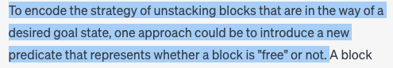
- it is redundant and useless.
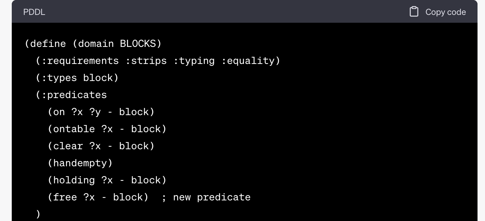
freepredicate will have the same use asclear
Encode knowledge greater than (a form of transitivity)#
- GPT4 suggested that the transitive property you described could be represented by the fact that if A is stacked on B, and B is stacked on C, then A is indirectly stacked on C.
- not a very direct way of solving it
Continue ask GPT4 about if we can encode the build from bottom to top strategy#
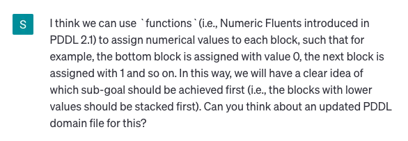
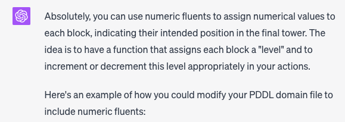
|
|
-
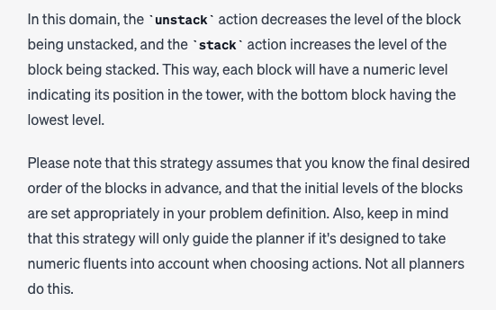
-
Comment: adding level information is a good idea, but the code for the effect of stack and unstack is not correct, we shall set the level of the up block based on the level of the block we want to stack on plus 1.
-
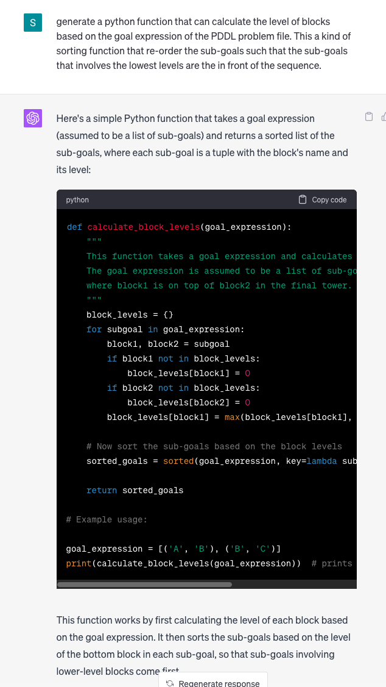
-
Comment: the sorting method written in Python is also not correct.
Conclusion: please do not trust the generated code of GPT4
Add additional subgoal#
- GPT4 mention using python to modify the goal expression
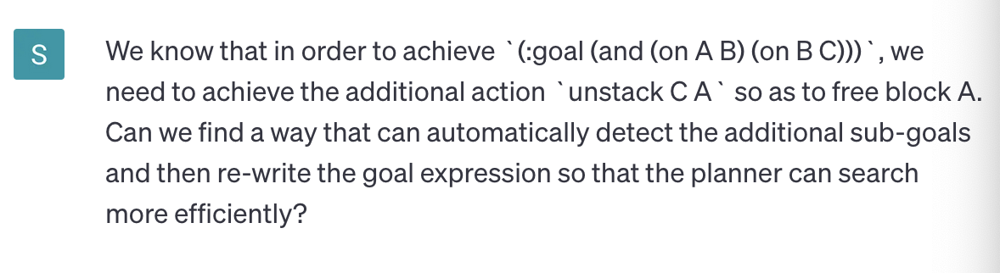
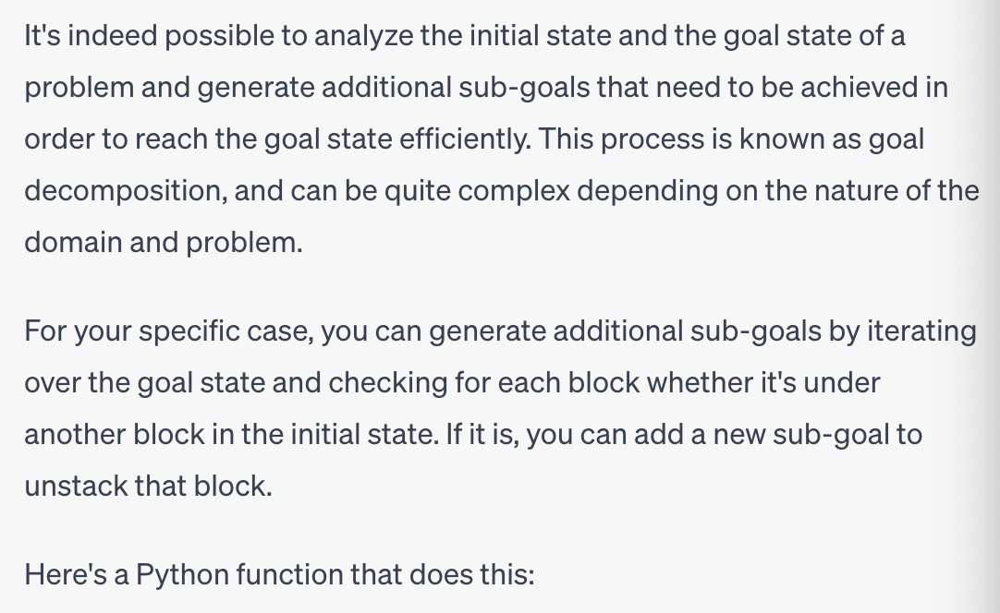
|
|
-
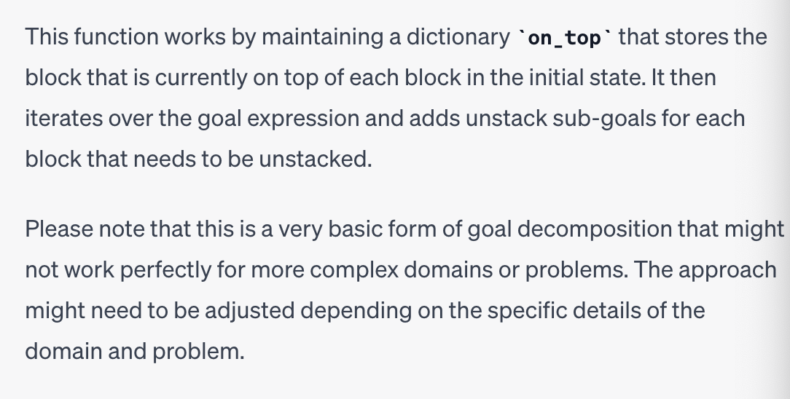
-
Comment: this python function is correct, however, this does not follow PDDL goal expression requirements
-
unstackis an action rather than a predicate, so it cannot be added directly to the goal expression. -
Some sub-goals only need to be true temporarily. In your example, the
clear Apredicate only needs to be true beforeon A B, and does not need to be maintained afteron A Bis true. -
https://chat.openai.com/share/73285a15-dbb8-46ef-8295-a0839a541122
Ask GPT4 to use features in PDDL version 3 to add the additional subgoal#
-
PDDL version 3 introduce constraints for the state trajectory. Please utilize the features in PDDL 3 to restrict the goal trajectory to have
clear Abeforeon (A, B)? -
PDDL 3.0 indeed introduces more expressive control over the plan and state trajectory through the use of plan constraints. In this case, to express the requirement that
clear Ashould be true beforeon A B, you can use thealwaysandsometime-beforetemporal constraints. Thesometime-beforeconstraint ensures that the first condition (clear A) is true at some point in time before the second condition (on A B).Here’s how you could modify the problem to include this constraint:
1 2 3 4 5 6 7 8 9 10 11 12(define (problem BLOCKS-4-0) (:domain BLOCKS) (:objects B A C - block) (:init (clear C) (clear B) (ontable B) (ontable A) (on C A) (handempty)) (:goal (and (on A B) (on B C))) (:constraints (and (sometime-before (clear A) (on A B)) ) ) )This PDDL problem states that
Amust be clear sometime beforeAis onB.Note that your planning system needs to support PDDL 3.0 for these constraints to be correctly parsed and enforced. Not all planning systems support PDDL 3.0. Additionally, adding constraints can make the problem more difficult to solve, so it might take longer for the planner to find a solution.
Other strategies suggested by GPT4#
Building block towers involves various strategies. While the bottom-to-top strategy is most common due to its intuitive approach and real-world application (like a crane building a skyscraper), other strategies can be applied depending on the specific rules and constraints of the problem. Here are a few examples:
-
Top-to-bottom strategy: In this approach, you would start by creating the desired top of the tower first, and then progressively add blocks underneath. This strategy might be useful in some virtual or abstract environments where gravity doesn’t apply or can be temporarily suspended.
-
Segmented construction: This approach involves building multiple smaller towers (or segments) that are then combined to form the final tower. This strategy might be useful if there are temporary space constraints or if multiple agents are working together to build the tower.
-
Deconstruction-Reconstruction strategy: This approach is useful when the initial state is a tower that is close to the goal state but has some blocks out of place. The strategy involves unstacking the out-of-place blocks, then restacking them in the correct positions.
-
Depth-first or Breadth-first strategy: These are classic search strategies that can be applied to the block tower problem. Depth-first involves choosing a block and then making all possible moves with that block before moving on to the next one. Breadth-first involves making one move with each block, then returning to the first block for the second move, and so on. The best choice between these depends on the specifics of the problem.
-
Heuristic-based strategy: This involves using a heuristic (a rule of thumb or scoring function) to decide the next move. For example, a simple heuristic might be to always move the block that is closest to its final position in the goal state. More sophisticated heuristics might take into account the number of moves required to reach the goal state (an estimate), the rules of the domain, and the current state of the world.
-
Optimization-based strategy: Some strategies might involve optimizing a particular metric, such as the total time taken, the number of moves, or the stability of the tower.
These are general strategies and might need to be adapted based on the specific rules and constraints of the block world being considered. It’s also worth noting that the choice of strategy can greatly influence the complexity and efficiency of the solution.
Ask whether if the strategy of identifying necessary subgoals based on the current state and goal can be encoded into PDDL domain file#
Answer:
In PDDL, domain files define the possible actions and their effects, but don’t specify the strategy to achieve a particular goal. The strategy is typically determined by the planner, based on the initial state and goal state specified in the problem file.
The kind of knowledge you’re asking about – identifying necessary subgoals based on the current state and goal – is usually part of the planning algorithm itself, not the domain definition. That is, it’s the responsibility of the planner to figure out that it needs to unstack block C from block A before it can stack A on B, based on the given domain, initial state, and goal state.
However, you could potentially encode some of this knowledge in the PDDL domain file by defining “macro-actions” or “methods” that represent common sequences of actions. For example, you could define a method for moving a block from one location to another, which internally includes the necessary unstack and stack actions. This is a feature of some extensions of PDDL, like Hierarchical Task Network (HTN) planning, but it’s not part of the core PDDL language.
It’s also worth noting that some modern planners use techniques like heuristic search to guide the planning process towards the goal more efficiently. These heuristics can take into account factors like the ones you’re discussing – for example, a heuristic might estimate the cost of achieving the goal by counting the number of blocks that are not in their goal position, or the number of blocks that need to be unstacked. This kind of heuristic could guide the planner to unstack block C from block A before trying to move A, even without explicit subgoals to do so.
In summary, while you can’t directly encode the kind of procedural knowledge you’re asking about in a PDDL domain file, there are other techniques and extensions to PDDL that can help guide the planner to find a solution more efficiently.
Macro action#
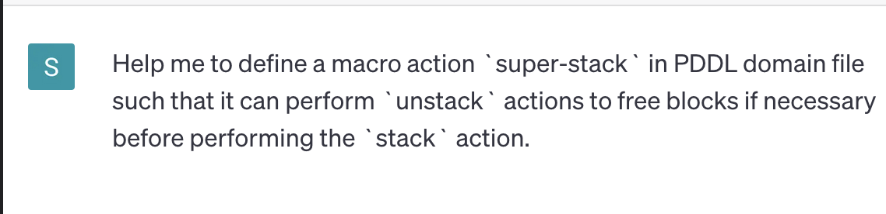
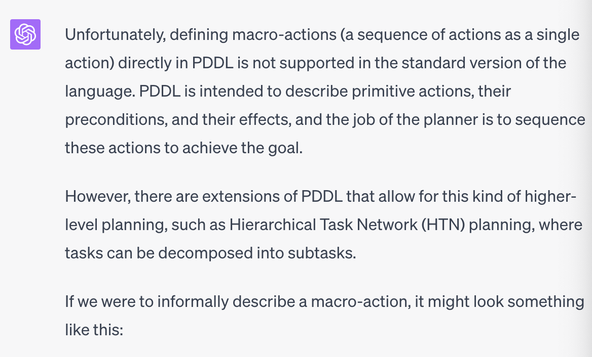
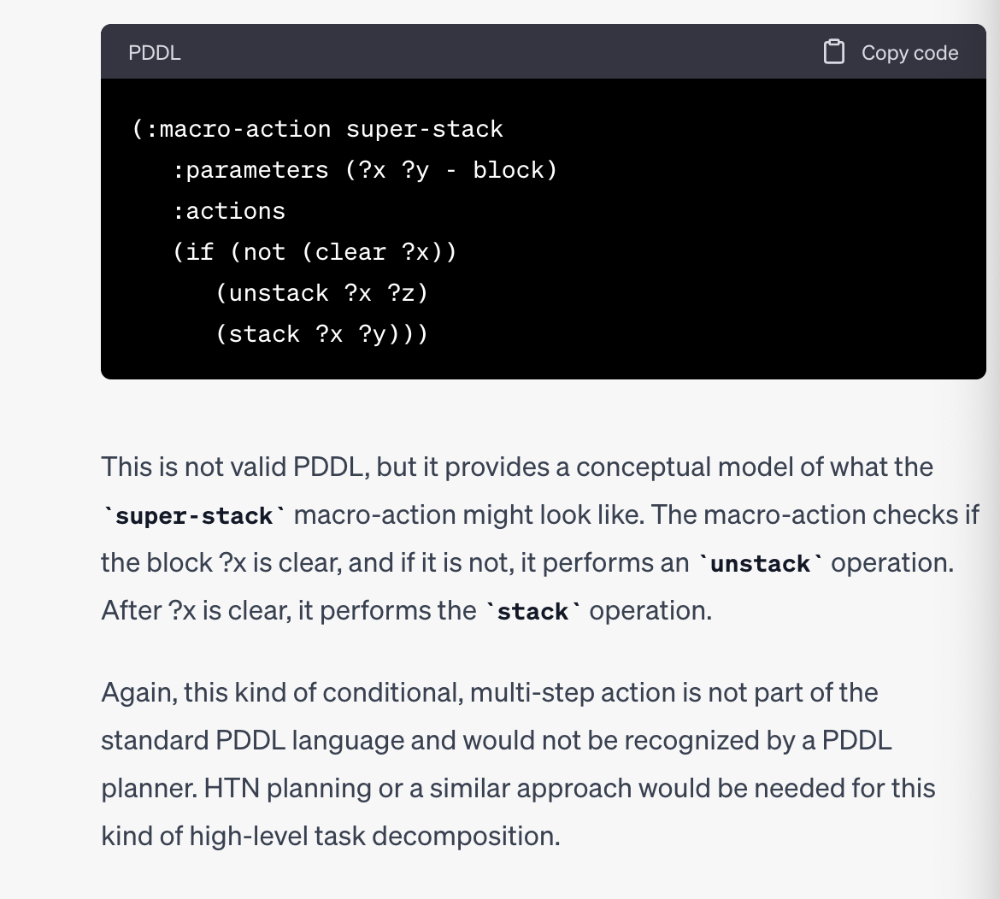
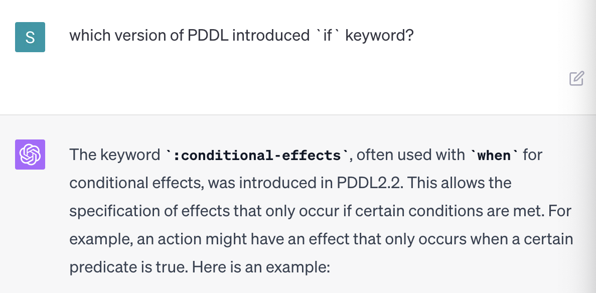
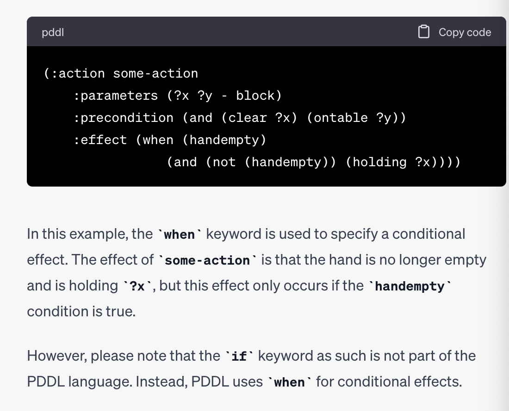
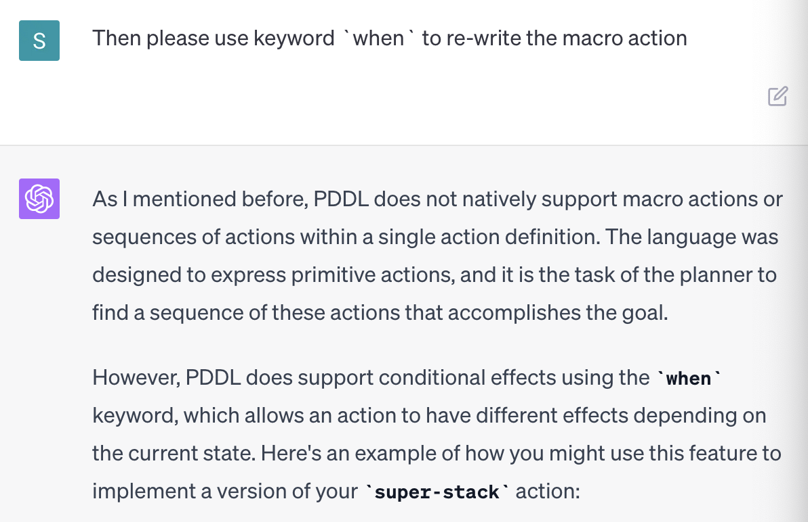
|
|
In this example, super-stack action has a conditional effect: if ?x is on ?z, it will be unstacked, making ?z clear. Then, if ?x is not on ?z and ?x is clear, it will be stacked on ?y, making ?y not clear and ?x clear.
Please note that this is a somewhat simplified example and might not work as expected in a real planning problem, especially if there are multiple blocks involved. The PDDL planner may also need to support the :conditional-effects requirement to correctly interpret this action.
Remember, PDDL is a language for specifying planning domains and problems, not for implementing planning algorithms. To control the order of actions (like unstacking before stacking), you usually need to design your planning algorithm or heuristic function accordingly.
Heuristics - distance measure#
-
Q: If we want to use heuristics (e.g., distance measure) to help planners to solve BLOCK domain problems, how can we do that? What should be added in the domain and the problem file?
-
A: Heuristics are not part of the PDDL language itself – they are part of the planning algorithm that is used to solve the problem. PDDL is a language for describing planning problems, and it is up to the planner (the algorithm or software that solves the problem) to decide how to use heuristics.
Most modern planning algorithms use heuristics to guide the search process. For example, in the A* search algorithm, the heuristic function estimates the cost to reach the goal from the current state, and this estimate is used to prioritize which states to explore next.
In the blocks world, one common heuristic is the number of blocks that are not in their goal position. This is sometimes called the “misplaced blocks” heuristic. Another common heuristic is the sum of the distances (in terms of number of moves) each block is from its goal position.
However, these heuristics are not specified in the PDDL domain or problem file. Instead, they are part of the planning algorithm itself.
Some planning software allows you to provide a custom heuristic function. This is typically done by writing a function in the programming language of the planner, not by adding something to the PDDL files. The specifics of how to do this depend on the particular planning software you are using.
Remember, the purpose of PDDL is to provide a standard, language-independent way to describe planning problems, so that they can be solved by a variety of different planners. The design of the heuristic function is part of the design of the planner, not part of the problem description.
To improve the efficiency of solving the block world problems, you might want to consider using a planner that supports heuristic search, and choose or design a heuristic function that is suitable for the block world domain. Some examples of such planners include Fast Downward, LAMA, and others. These planners have various options for heuristic functions and search strategies that can be configured to better solve your specific problem.
-
Q: Can we design the PDDL domain file (e.g., using Numeric fluent feature) so that the planner can utilize the information in PDDL file to measure heuristics?
-
A: Numeric fluents, introduced in PDDL 2.1, are an extension to the PDDL language that allow for actions to have numeric preconditions and effects, and for the state to include numeric variables.
In the context of the blocks world, you might use numeric fluents to represent the height of each stack of blocks, or the distance of a block from its goal position. This could potentially provide additional information that a planner could use to guide its search.
However, it’s important to understand that the heuristic function is still part of the planner, not the PDDL domain or problem description. The PDDL language provides a way to describe the state of the world and the effects of actions, but it doesn’t specify how to measure the distance to the goal or how to guide the search process. That is the job of the planning algorithm.
Even if you use numeric fluents in your PDDL description, it is still up to the planner to decide how to use this information. The planner might use the numeric fluents to compute a heuristic value, or it might ignore them and use a different heuristic instead.
In summary, while numeric fluents can provide additional information about the state of the world, it’s still up to the planner to decide how to use this information to guide its search. If you want to use a specific heuristic function, you’ll likely need to implement this in the planner itself, rather than in the PDDL description.
Here is an example of how you might use numeric fluents in the blocks world:
1 2 3 4 5 6 7 8(define (domain blocks) (:requirements :strips :typing :equality :numeric-fluents) (:types block) (:predicates (on ?x ?y - block) (ontable ?x - block) (clear ?x - block) (handempty) (holding ?x - block)) (:functions (height ?x - block)) ... )In this example, the
heightfunction represents the height of each block in the stack. You could then define actions that increase or decrease the height of a block, and use these actions in your planning problem. However, as mentioned before, the actual use of this information for heuristic computation would be up to the specific planning algorithm you’re using. -
Q:
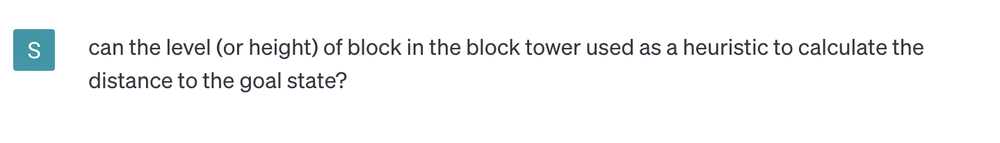
-
A: Yes, absolutely! The level or height of a block in a tower can indeed serve as a heuristic to estimate the distance to the goal state. This is often referred to as the “block distance” heuristic. Here’s how it works:
For each block that is not in its goal position, you calculate the distance (in terms of the number of blocks) it would need to move to reach its goal position. Then, you sum these distances for all blocks. The resulting value serves as an estimate of the distance to the goal state.
Let’s take an example where the goal is to stack three blocks in the order A on B and B on C. If the current state is A on C and B is on the table, the “block distance” heuristic would be 2 because:
-
Block A needs to move 1 step (from on top of C to on top of B).
-
Block B needs to move 1 step (from the table to underneath A).
So, the total “block distance” is 1 (for A) + 1 (for B) = 2.
This heuristic is admissible (it never overestimates the true cost) and hence it is suitable for use with algorithms like A*.
Note that while this heuristic can help guide the search towards the goal state, it doesn’t account for every aspect of the problem (like the fact that only one block can be moved at a time, or that a block can’t be moved if there’s another block on top of it). Therefore, the actual number of actions needed to reach the goal may be higher than the estimate provided by the heuristic.
As with any heuristic, the block distance heuristic is a simplification of the problem, intended to guide the search process without having to explore the entire state space. Different heuristics may be more or less effective depending on the specific problem and the characteristics of the state space.
-
Montezuma Revenge Continue#
- we obtained both the domain and problem file.
- https://chat.openai.com/share/0cb01f53-67cf-4a01-afbd-2a0c4ea5abf4
- surprisingly, GPT 4 is able to read and understand the ascii diagram
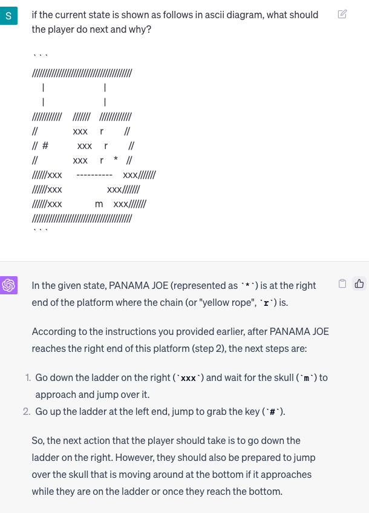
Next step: PDDL validation#
-
once we get the domain and problem file from GPT, we cannot guarantee that they are valid. Thus we can either
-
use a existing validation tool to repair the file https://github.com/KCL-Planning/VAL -
read error messages when generating the plan and ask GPT to fix the content based on the error message
- we think that the error message is informative enough
-
-
We found out that GPT4 is capable of giving correct fix while GPT3 failed to do so
-
finally the domain and problem pddl files gives a valid plan
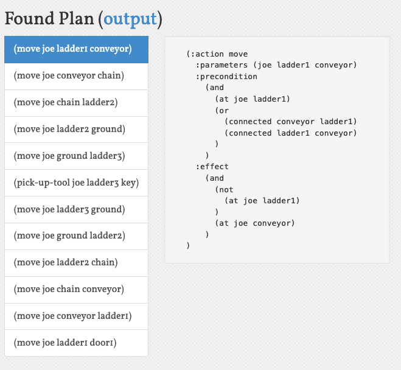
Next move: given the plan, instruction and map, ask GPT4 to generate intermediate screenshot of the map represented as ascii#
prompt
|
|
- GPT4 cannot give correct ascii diagrams
- GPT3 cannot event preserve the map structure
Conclusion: So far we cannot ask GPT to generate the ascii diagram snapshot for us. We need to make it by ourselves.
Next, train a modular policy model#
-
I may continue this next week because I need to write code for it.
-
automatic stop sign similar to policy sketch from Andreas
-
not automatic stop but with supervised learning
Abstract for two potential papers#
-
Title: Reversing the Paradigm: Utilizing Large Language Models for Enhanced Classical AI Planning
-
Abstract:
In contrast to traditional research, which employs classical AI planners to compensate for the brittle logical reasoning capabilities of Large Language Models (LLMs), this paper reverses the paradigm, investigating how LLMs can facilitate more efficient AI planning. Our proposed approach incorporates domain-specific knowledge from LLMs into planning problems written in the Planning Domain Definition Language (PDDL). We focus on four directions that was frequently employed to improve planning efficiency—subgoal ordering, task decomposition, macro-action translation, and goal distance inference. Our methodology, tested across a diverse range of planning domains and AI planners, effectively reduces the required node expansion for state space search. In sum, this study presents an innovative take on the role of LLMs in AI planning, shifting focus from their limitations to their potential as facilitators of planning efficiency.
-
Title: " Read, Plan, and Train: Towards a Fully Automated Approach of Harnessing Large Language Models in Language-Informed Reinforcement Learning"
-
Abstract:
In language-informed reinforcement learning, the prevalent approach, known as Language Reward Shaping (LRS), converts language data into scalar reward signals for training policy networks. However, this method has notable shortcomings. The scalar reward representation struggles to preserve chronological order inherent in language information, which leads to confusion in the sequence of events. Additionally, the compression of high-dimensional language data into scalars inadvertently results in loss of nuanced information, which in turn, can cause the policy network to be rewarded for partially satisfying trajectories, thereby reducing learning efficiency. Addressing these issues, we introduce a novel and fully automated methodology. Our strategy leverages large language models (LLMs) to translate game manuals and walkthrough instructions into the Planning Domain Definitions Language (PDDL). An AI planner generates a valid plan from the PDDL inputs, forming the basis for training modular control policies associated with each high-level action in the plan. This innovative approach has proven effective in the challenging environment of the Atari game, Montezuma’s Revenge, demonstrating superior performance over the traditional LRS approach.
Appendix#
planners#
https://github.com/AI-Planning/planutils/tree/main
plan animation#
https://github.com/planimation/documentation/tree/master/AnimationProfiles
video about generating relaxed graph and relaxed plans in FF planner#
https://www.youtube.com/watch?v=7XH60fuMlIM&t=131s
video about Landmarks heuristic#
https://www.youtube.com/watch?v=rL4ja2x_nFQ
https://www.youtube.com/watch?v=KlMJ5QpvLew
SIW explanation#
- SIW particularly exploits the idea of novelty (which depends on the predicates used to model the states), and then tries to achieve one goal at a time.
- Once a new goal fact is achieved, SIW checks if the new goal fact can be mantained true until the end, i.e. it doesn’t need to be made false to allow other goals to be true, like being the last time the goal fact is made true in the trajectory. This test is done approximately by computing the h_max without including any action that deletes the newly achieved goal fact.
- if they can find a delete relaxation plan, meaning that it does not need to make the last goal false.
- You can see the def of h_max in page 11,… it is based on a polynomial computation over the delete relaxation.
Paper Reading Notes#
-
Boosting Language Models Reasoning With Chain of Knowledge Prompting
- Author: Jianing Wang et. al.
- Publish Year: 10 Jun 2023
- Review Date: Sun, Jul 2, 2023
-
- Author: Lionel Wong et. al.
- Publish Year: 23 Jun 2023
- Review Date: Sun, Jul 2, 2023
-
Towards Language Models That Can See: Computer Vision Through the LENS of Natural Language
- Author: William Berrios et. al.
- Publish Year: 28 Jun 2023
- Review Date: Mon, Jul 3, 2023